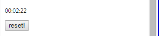

Comme nous avons planifié notre expérimentation initialement, notre démarche d'expérimentation a presque suivi la même voie, tout au long du projet. Nous avons d'abord commencé par faire des recherches sur les langages JSON et JavaScript. En effectuant une étude plus approfondie, nous avons découvert l'utilité d'un manifest JSON, qui est le point d'entrée de notre extension, tout en contenant des informations importantes au contenu de cette application. Nous avons découvert que ce fichier essentiel permet de sélectionner l'icône de l'extension et de la définir, appeler la page html à utiliser, déterminer à quels sites est-il permis d'utiliser les données en rapport à l'application et de la démarrer, ainsi que plusieurs autres fonctionnalités. Ensuite, nous avons utilisé Notepad++ comme éditeur de texte, afin de pouvoir écrire notre code JavaScript. Cet outil nous permettait d'alterner facilement et rapidement entre les scripts utilisés, ainsi qu'à nous proposer des options de complétion de termes, afin de perdre le moins de temps possible (IntelliSense). En plus, lorsque l'on plaçait de commandes reliées aux langages, ce programme les affichait en couleur, ce qui permettait une plus grande clarté du code. En vue de produire une extension bien faite et simple à utiliser, nous avons poursuivi nos recherches en HTML et CSS, en suivant des tutoriels en ligne et en expérimentant, avec essais et erreurs, à l'aide d'outils spécialement conçus comme l'éditeur HTML en ligne de w3school. Cet accessoire, présenté avec des centaines d'exemples HTML, CSS et JavaScript, nous a grandement aidé dans nos recherches et nous a permis d'acquérir des connaissances dans le domaine de ces langages, beaucoup plus rapidement et facilement. Gràce au mode développeur de Google Chrome au sujet des extensions, nous avons en effet pu importer notre code et le transférer sur le navigateur Google Chrome, de façon à pouvoir l'utiliser facilement sur le Web. C'est entièrement sur cet outil que repose la partie visuelle de notre application, qui se trouve à être une extension Google Chrome. Lorsqu'est venu le temps de créer notre fonctionnalité de raccourcis, la librairie MouseTrap nous a grandement aidé. En effet, cette librairie facile à utiliser offre du code préconçu qui permet de connecter les touches utilisées à des actions, ce qui a facilité notre expérience. Cet outil, indispensable à notre extension, a permis de régler plus d'un problème qu'on avait au départ. Étant donné notre incapacité, même en empruntant du code un peu partout sur les forums, d'effectuer constamment un script recherchant si une touche est pressée, MouseTrap a pu corriger nos complications à ce sujet. Puis, au moment de concevoir la partie du travail qui consistait à faire en sorte de pouvoir modifier certains aspects de la page, comme la couleur, la police ainsi que la grosseur du texte, nous avons eu besoin de la librairie JavaScript JQuery. Au tout début, nous pensions faire une liste de tous les conteneurs de texte de la page en cours et de changer la couleur automatiquement, mais nous nous sommes vite rendu compte que cela n'allait pas être possible, étant donné que chaque page web est faite différemment et que les conteneurs ne sont pas toujours les mêmes. La librairie JQuery nous a donc aidé à ce sujet, en permettant de changer dynamiquement tout le contenu de la page en une simple et seule commande.
Au tout début de notre projet, nous possédions quelques incertitudes au sujet de la façon dont notre extension allait avancer. Nous devions apprendre à nous familiariser à l'environnement de travail Google Chrome, au HTML au CSS et au JavaScript. Aussi, puisque nous ne possédions aucune autre connaissance dans le domaine, nous voulions placer en priorité nos fonctionnalités de raccourcis et de modification du texte, plus particulièrement la grosseur de la police, et nous n'étions pas certains d'avoir assez de temps pour concevoir un chronomètre et un "keylogger". Gràce aux tutoriels présents sur w3school, à son éditeur HTML en ligne, nous avons pu vite apprendre chaque fonctionnement de ces langages dont on avait besoin afin de poursuivre nos fonctionnalités. De plus, avec Notepad++, nous avons rapidement et facilement mis en place les scripts et les pages html dont nous avions besoin. Finalement, les librairies MouseTrap et JQuery nous ont permis de concevoir nos fonctionnalités prioritaires rapidement et de façon entièrement fonctionnelle, ce qui nous a donné l'opportunité de poursuivre et de continuer notre extension, en plus de débuter les options moins importantes que nous voulions faire.
Au cours de notre recherche, nous avons couvert tous les éléments que nous voulions au départ. Notre expérimentation ressemble beaucoup à ce que nous avions prévu initialement. Suite à beaucoup de recherches, au sujet du HTML, du CSS, du JavaScript, des extensions Google Chrome, de MouseTrap ainsi que de JQuery, nous sommes parvenus à concevoir chaque fonctionnalité prévue. Gràce à plusieurs outils que nous avons utilisés, qui nous ont grandement facilité la tàche, nous avons réussi à étaler nos connaissances et produire une extension Google Chrome simple à utiliser, versatile et pratique.
Notepad++
Version alternative et plus avancée du bloc-notes de Microsoft, Notepad++ est un éditeur de texte générique qui intègre la coloration syntaxique de code source pour les langages HTML, JavaScript et bien d'autres. Au cours de notre projet, nous avons utilisé ce programme afin d'écrire nos scripts JavaScript et nos pages HTML, que l'on exécutait par le biais de notre extension Google Chrome. Facile et rapide et versatile d'utilisation, avec ses codes de couleur, Notepad++ a facilité notre travail en nous offrant un environnement simple et dynamique.
Se rendre sur le site http://notepad-plus-plus.org/fr/download/v6.7.4.html
Télécharger le Notepad++ Installer
Exécuter le programme
Éditeur HTML en ligne de w3school
Éditeur HTML permettant de visualiser rapidement et facilement le code HTML ou JavaScript. Au cours de notre projet, nous avons utilisé cet éditeur, afin de pouvoir tester instantanément du code.
Se rendre sur le site http://www.w3schools.com/html/tryit.asp?filename=tryhtml_default
Placer le code HTML/CSS/JavaScript désiré et cliquer sur le bouton "See Result"
MouseTrap
Librairie permettant la saisie et l'identification de touches de clavier. Au cours de notre projet, nous avons utilisé cette librairie afin de pouvoir créer notre option de raccourcis. Lorsque l'on presse les touches Shift et Z, sans être dans un champ texte, on peut ouvrir les pages que l'on a préalablement placées dans les champs reliés.
Se rendre sur le site http://craig.is/killing/mice
Télécharger la librairie (dans l'introduction)
Placer la libraire dans le dossier de l'extension Google Chrome
Inclure la librairie dans le fichier manifest.json, dans le champ "content_scripts"
Exemple :
"content_scripts":
[
{
"matches": ["
"js": ["mousetrap.js"],
"all_frames": true
} ],
JQuery
Librairie JavaScript permettant une manipulation simple et facile du code HTML présent sur une page d'un navigateur internet. Au cours de notre projet, nous avons utilisé cette librairie dans le but de changer l'aspect (couleur, grosseur, police) du texte présent sur la page.
Se rendre sur le site http://jquery.com/download/
Télécharger la librairie
Placer la librairie dans le dossier de l'extension Google Chrome
Inclure la librairie dans le fichier manifest.json, dans le champ "content_scripts"
Exemple :
"content_scripts": [
{
"matches": ["
"js": [jquery.js"],
"all_frames": true
}
]
Extension Google Chrome multiusage, conçue pour les débutants et expérimentés du navigateur Google Chrome. Cette application propose l'utilisation de fonctionnalités variées comme une option de raccourcis de pages internet, pour modifier la couleur, la police ainsi que la grosseur du texte, un chronomètre affichant la durée de la navigation Google Chrome ainsi qu'un "keylogger".
Lorsque l'on a le dossier de l'extension sur son ordi (Grugrue n'étant pas encore sur le Chrome Web Store), on clique sur l'icône d'option du navigateur Google Chrome, pour les faire défiler.
On clique ensuite sur "Historique".
On choisit l'option "Extensions" à gauche.
On clique sur le bouton "Charger l'extension non empaquetée..."
On choisit le dossier de l'extension
L'utilisation de notre extension Grugrue a été conçue la plus simple possible, de façon à ce que tout le monde puisse l'utiliser.
Afin de prédéfinir des raccourcis de page Web, on entre l'URL entier de la page que l'on veut sauvegarder en raccourci (une page par champ texte, pour un total de 5 pages). Après avoir entré les sites voulus, on clique sur le bouton "Sauvegarder". Finalement, on presse les touches Shift et Z en même temps, lorsque notre curseur ne se situe pas dans un champ texte, afin de faire afficher les pages définies en raccourcis. Si l'on veut retirer une page des raccourcis, on n'a qu'à l'enlever du champ texte.
Exemple:
Cliquer sur le bouton sauvegarder plus bas
Pour changer la taille du texte, choisir la taille dans la liste qui est affichée dans le champ "Taille de la police". Pour la remettre à l'état normal, choisir l'option "normal".
Pour changer la couleur de la police, écrire la couleur en anglais que vous voulez sélectionner dans le champ "Couleur de la police". Pour la remettre à l'état normal, enlever le texte du champ.
Pour changer la couleur de l'arrière-plan, écrire la couleur en anglais que vous voulez sélectionner dans le champ "Couleur de l'arrière-plan. Pour la remettre à l'état normal, enlever le texte du champ.
Pour changer le type de police, écrire le nom de la police dans le champ "Police". Pour le remettre à l'état normal, enlever le texte du champ.
Ensuite cliquer sur le bouton "Sauvegarder".
Exemple
Le chronomètre affiche automatiquement le temps écoulé depuis le début de la session du navigateur Google Chrome. Pour recommencer le compteur, cliquer sur le bouton "Reset" à côté de celui-ci.
Exemple

Le "KeyLogger" affiche automatiquement les touches pressées lorsque l'extension est ouverte. Pour recommencer l'affichage, cliquer sur le bouton "Reset" à côté de celui-ci.
Exemple